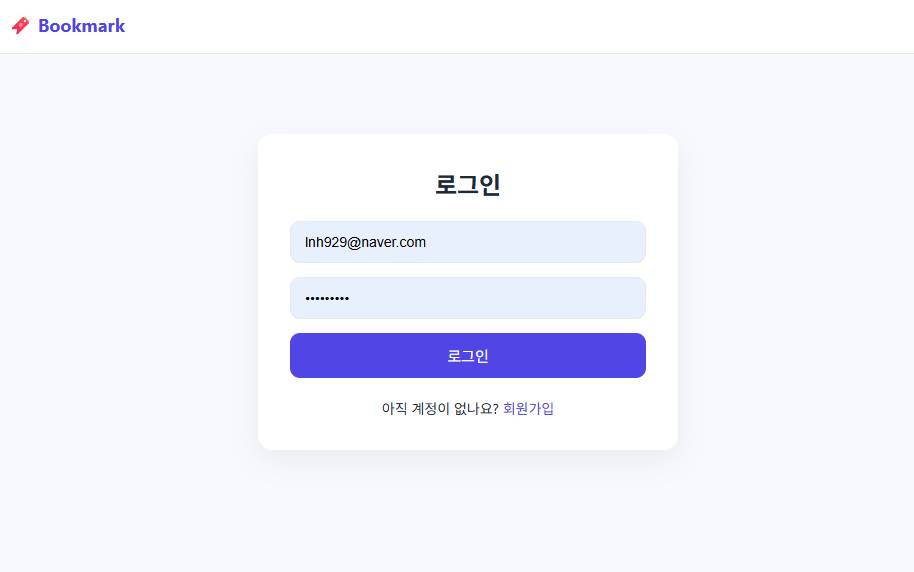
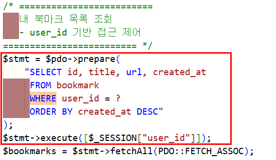
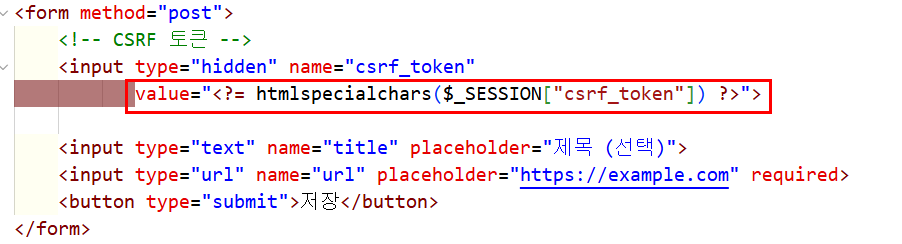

Portfolio
Portfolio
Portfolio
Portfolio
개인 기록을 위한 인증 기반 북마크 서비스
Bookmarker는 단순한 링크 저장 도구가 아니라,
기록 서비스에서 반드시 필요한 인증·접근 제어·상태 변경 보호를
최소 단위로 직접 구현해본 개인 서비스 프로젝트입니다.
이 프로젝트는 “무엇을 만들었는가”보다 서비스가 성립하기 위한 최소 조건을 어떻게 설계했는가에 초점을 맞췄습니다.
모든 기능은 로그인 상태를 기준으로 동작하며, 인증되지 않은 접근은 페이지 단위에서 차단됩니다.
북마크 데이터는 항상 user_id 기준으로 접근되며, 타 사용자 데이터 접근 가능성을 구조적으로 제거했습니다.
기능은 단순하지만, 실제 서비스에서 요구되는 인증·보안·운영 조건을 모두 고려해 구현했습니다.
로그인 전/후 접근 페이지를 명확히 분리하고, 인증 상태에 따른 라우팅 흐름을 고정했습니다.
login / register / mypage조회·수정·삭제 모든 쿼리에 user_id 조건을 포함해 데이터 접근 경계를 일관되게 유지했습니다.
SELECT · UPDATE · DELETEPOST 기반 요청과 세션 검증을 중심으로 CSRF·비정상 요청을 방어했습니다.
CSRF Token / Session모든 요청은 세션 인증을 선행 조건으로 하며, 상태 변경 요청은 POST 방식으로만 처리됩니다.

로그인 인증 처리 마이페이지 북마크 관리
마이페이지 북마크 관리

user_id 기반 쿼리
CSRF 토큰 검증로컬(XAMPP)에서 기능을 검증한 뒤, FileZilla를 통해 dothome 호스팅 환경에 배포했습니다. 개발 환경과 운영 환경의 차이를 직접 경험하며 배포를 하나의 검증 단계로 인식하게 되었습니다.
배포는 개발의 끝이 아니라, 서비스가 성립하는 조건을 확인하는 과정이었습니다. 의존 파일 누락 문제를 계기로 런타임 전제를 문서화하고 배포 흐름을 고정했습니다.